נכנסים עם אימייל וסיסמה בכתובת המערכת. המערכת פרטית — אין הרשמה חופשית, ורק מי שבעל החשבון הוסיף יכול להיכנס.
הוספת שותפה או עובד
נכנסים להגדרות ← צוות.
ממלאים שם, אימייל וסיסמה זמנית ולוחצים הוספה לצוות.
מעבירים את הסיסמה באופן אישי. אחרי הכניסה הראשונה מחליפים אותה בהגדרות ← הפרופיל שלי.
סנכרון: כל מי שבצוות עובד על אותם נתונים. לקוח שהשותפה עדכנה, קובץ שהיא העלתה או תשלום שנרשם — מופיעים אצלך מיד כשהעמוד נטען. אין צורך להעביר דברים בוואטסאפ.
בטלפון
המערכת בנויה גם לטלפון: בתחתית המסך יש סרגל עם דשבורד, לקוחות, פרויקטים ומשימות, ובכפתור עוד נמצאים כל שאר האזורים. כפתור ה־+ למעלה פותח יצירה מהירה (ליד, לקוח, פרויקט, שאלון, משימה, תשלום, תיקיית סושיאל).
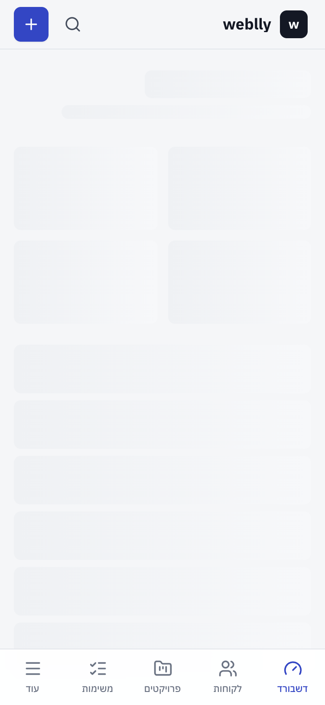
הדשבורד בטלפון
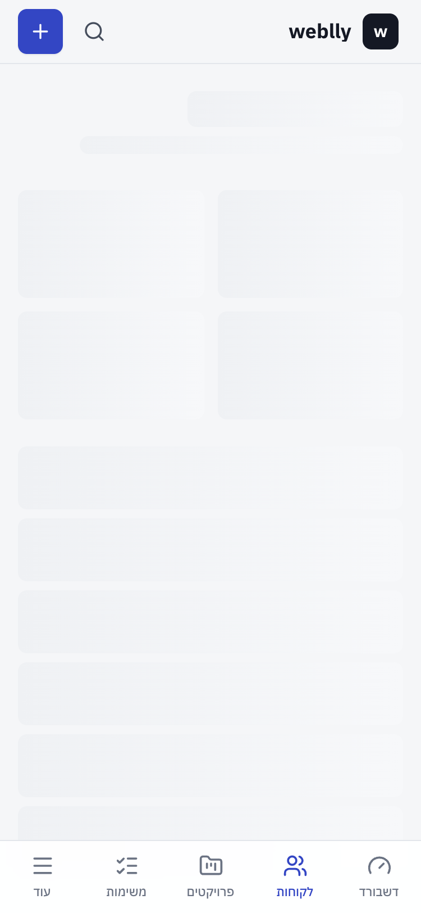
תיק לקוח בטלפון
2. הדשבורד
המסך הראשון אחרי הכניסה. כל המספרים מחושבים מהנתונים האמיתיים — ולחיצה על כל כרטיס פותחת את הרשימה שמאחוריו.
כל פנייה חדשה — מאינסטגרם, מהמלצה, מהאתר — נכנסת כליד: שם, עסק, טלפון, אימייל, מקור, סוג פרויקט, מחיר משוער ותאריך מעקב.
ברשימה אפשר לחפש, לסנן לפי סטטוס ומקור, ולמיין לפי תאריך מעקב.
לידים שתאריך המעקב שלהם הגיע מופיעים גם בדשבורד.
הפיכת ליד ללקוח
בעמוד הליד לוחצים הפוך ללקוח. המערכת פותחת תיק לקוח ופרויקט עם כל הפרטים שכבר הוזנו — בלי להקליד שוב. אם כבר קיים לקוח עם אותו טלפון או אימייל, הליד מצורף אליו ולא נוצרת כפילות.
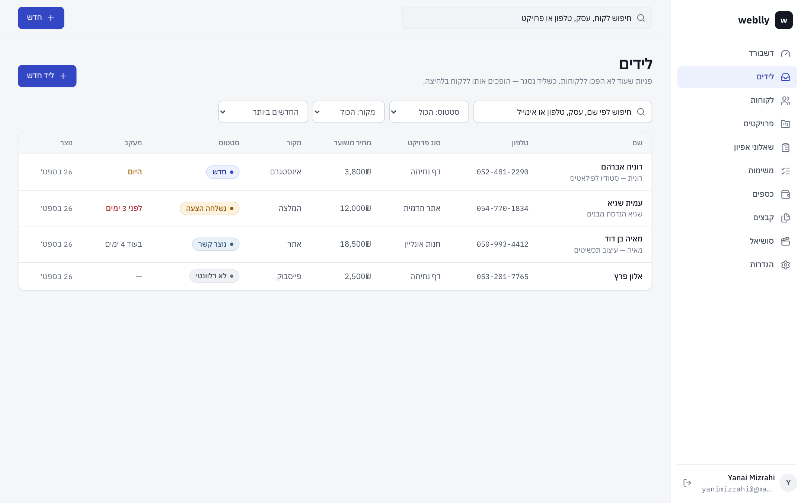
רשימת הלידים עם סטטוס, מקור ותאריך מעקב
4. לקוחות ותיק לקוח
ברשימת הלקוחות רואים את כל הלקוחות — נוכחיים ועבר — עם הפרויקט הנוכחי, השלב שלו, סטטוס האפיון, כמה שולם ומה היתרה.
סטטוסים של לקוח
סטטוס
מתי
בעבודה פעילה
יש פרויקט בעבודה
תפעול ותחזוקת אתר
האתר באוויר ואנחנו ממשיכים לתחזק אותו
בהמתנה
העבודה עצרה זמנית
סיים עבודה
סיימנו לעבוד יחד
בארכיון
מוסתר מהרשימות, הנתונים נשמרים
משנים סטטוס בלחיצה על התגית ליד שם הלקוח בראש התיק. ברשימה אפשר לסנן: לקוחות נוכחיים, לקוחות עבר, או הכול.
תיק הלקוח
פותחים לקוח ורואים הכול במקום אחד. הלשוניות: סקירה · אפיון · פרויקטים · כספים · חוזים · קבצים · משימות · הערות · היסטוריה. בסקירה: שלב הפרויקט, הפעולה הבאה, כמה שולם וכמה נשאר, מצב השאלון, משימות פתוחות וקבצים חשובים.
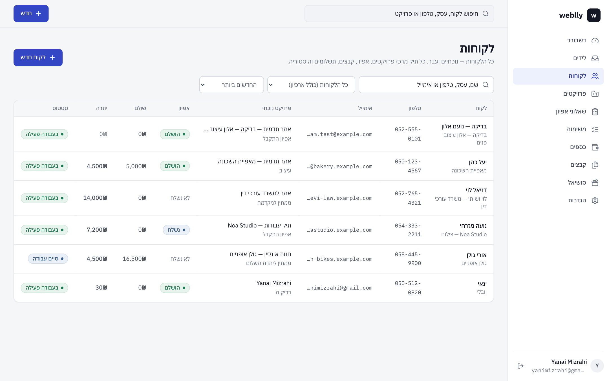
רשימת הלקוחות — פרויקט נוכחי, שלב, אפיון ויתרה
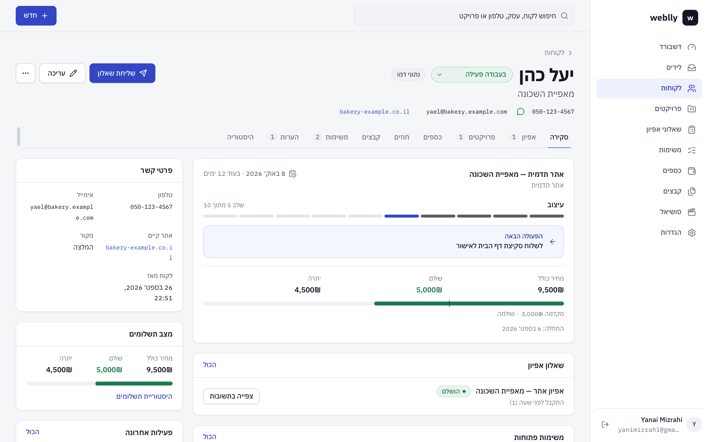
תיק לקוח — סקירה: שלב, הפעולה הבאה, שולם ויתרה
5. פרויקטים ולוח הקנבן
לכל פרויקט: שם, לקוח, סוג, מחיר כולל, מקדמה, תאריך התחלה, יעד לסיום, שלב, הפעולה הבאה והערות. "שולם" ו"יתרה" מחושבים אוטומטית מהתשלומים — אין צורך לעדכן ידנית.
שלבי הפרויקט
ליד · אפיון נשלח · אפיון התקבל · ממתין למקדמה · עיצוב · פיתוח · בדיקות · ממתין לאישור לקוח · ממתין ליתרת תשלום · הסתיים
לוח הקנבן
בעמוד הפרויקטים לוחצים לוח. כל עמודה היא שלב. גוררים כרטיס לעמודה אחרת — והשלב מתעדכן במערכת. בטלפון: לוחצים לחיצה ארוכה על כרטיס וגוררים, או משתמשים בכפתור ההעברה שעל הכרטיס.
צ׳קליסט מוכן: בעמוד פרויקט, ב"משימות" יש כפתור "צ׳קליסט מוכן" — קבלת לוגו, עיצוב דסקטופ, התאמה למובייל, חיבור דומיין, SEO ועוד. מסמנים רק מה שרלוונטי.
לוח הפרויקטים — גוררים כרטיס כדי לשנות שלב
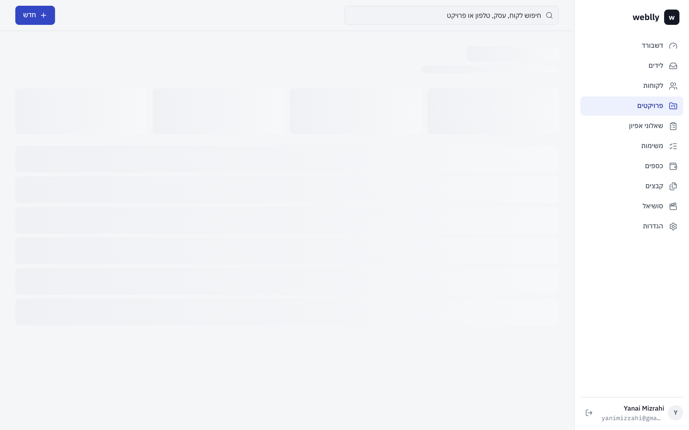
עמוד פרויקט — שלב, תשלומים, משימות וקבצים
6. שאלוני אפיון
במערכת שלוש תבניות מוכנות: אתר תדמית, חנות אונליין ומערכת / אפליקציית SaaS. אפשר לערוך אותן ולבנות חדשות בבונה השאלונים: שלבים, 14 סוגי שאלות, שאלות חובה, "בחירה עד 2", שאלות שמופיעות רק לפי תשובה קודמת, וגרירה לשינוי סדר.
שתי דרכים לשלוח שאלון
דרך
מתי משתמשים
איך
קישור כללי
לקוח חדש שעוד לא במערכת; פרסום בביו, בוואטסאפ או באתר
בתבנית ← "קישור כללי" ← העתקה
קישור אישי
לקוח שכבר יש לו תיק ופרויקט
בתיק הלקוח ← "שליחת שאלון" ← העתקה / וואטסאפ
מה קורה אוטומטית כשלקוח שולח שאלון
אם הלקוח לא קיים — נפתח לו תיק לקוח מהשם, העסק, הטלפון והאימייל שמילא. אם הוא כבר קיים (לפי טלפון או אימייל) — השאלון מצורף לתיק הקיים.
אם אין לו פרויקט — נפתח פרויקט בשלב "אפיון התקבל", עם הפעולה הבאה "לעבור על האפיון ולשלוח הצעת מחיר".
כל התשובות נשמרות ומוצגות בתיק, מסודרות לפי שלבים.
הכול נרשם בהיסטוריה ומופיע בדשבורד.
הלקוח לא צריך להירשם. הטופס מחולק לשלבים, נוח בטלפון, ונשמר אוטומטית — אפשר לעצור ולחזור מאותו קישור. בתשובות אפשר להוסיף הערות פנימיות; התשובה המקורית של הלקוח לא משתנה.
התבניות — כל אחת עם "קישור כללי"
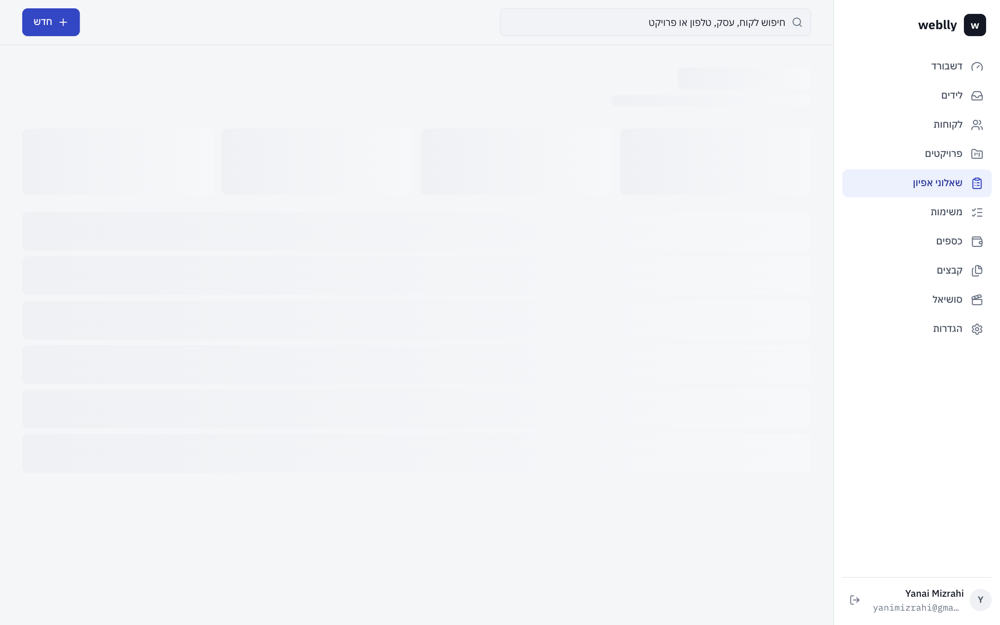
בונה השאלונים — כאן מגדירים "בחירה עד 2", חובה ותנאי הצגה
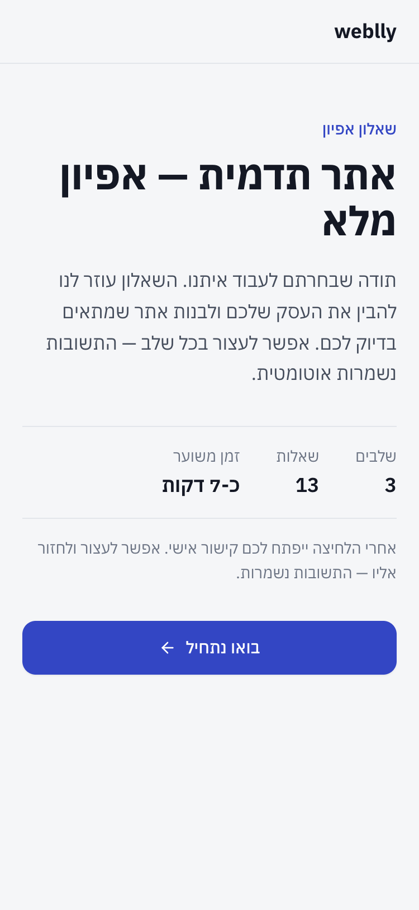
מה שהלקוח רואה בטלפון
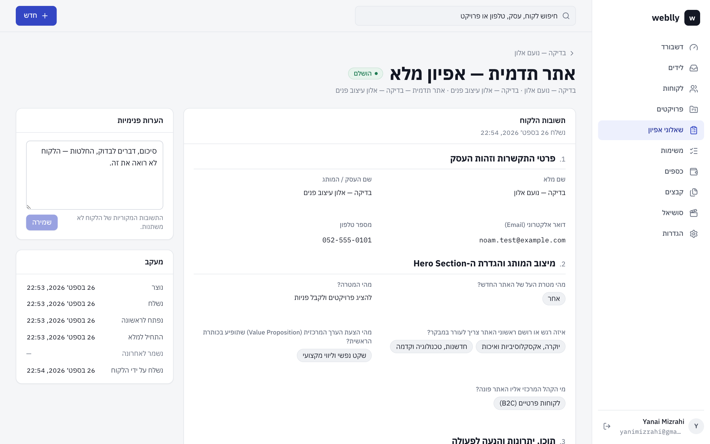
התשובות בתוך המערכת, מסודרות לפי שלבים
7. קבצים, חוזים ומסמכים
בכל פרויקט ובכל תיק לקוח יש אזור קבצים. בוחרים לאן להעלות, ומעלים (גרירה או בחירה):
קטגוריה
מה שמים שם
רפרנסים
אתרים ותמונות שהלקוח אוהב, השראות
טקסטים לאתר
כל הטקסטים שצריך להכניס לאתר — כדי לא לשכוח
חוזים
הסכמי עבודה והצעות מחיר
מיתוג · תמונות · חומרים מהלקוח · תוצרים · חשבוניות · אחר
לפי השם
הקבצים מוצגים מסודרים לפי קטגוריה, עם תצוגה מקדימה לתמונות, PDF וסרטונים, והורדה בלחיצה. עד 50MB לקובץ.
הסכמים ממותגים
בתיק הלקוח ← חוזים ← יצירת הסכם (או מתוך עמוד פרויקט, או מכפתור ה־+). המערכת בונה הסכם עבודה עם הלוגו של weblly, מספר הסכם (למשל WB-2026-001), פרטי שני הצדדים, המחיר, המקדמה והיתרה, תכולת העבודה וסעיפים מוכנים — ואת כל הטקסט אפשר לערוך, עם תצוגה מקדימה חיה.
אחרי שהלקוח חתם: העלאת עותק חתום — ההסכם מסומן אוטומטית כ"נחתם".
פרטי הסטודיו בראש ההסכם (שם משפטי, ח.פ/ע.מ, כתובת, שם החותם) נקבעים פעם אחת בהגדרות.
חשוב: הסעיפים הם תבנית עבודה מקובלת, לא ייעוץ משפטי. כדאי שעורך דין יעבור עליהם פעם אחת.
אפשר גם להעלות הסכם קיים כקובץ (העלאת קובץ) ולסמן סטטוס ותאריך חתימה.
8. כספים ותשלומים
המערכת עוקבת אחרי תשלומים — היא לא גובה כסף. כל תשלום: סכום, תאריך, אמצעי (העברה, ביט, מזומן, אשראי, אחר), סוג (מקדמה, ביניים, סופי) ואסמכתא.
רישום תשלום: מתוך הפרויקט ("רישום תשלום" — יש גם כפתור שממלא את היתרה בלחיצה), או מכפתור ה־+.
עריכה ומחיקה של תשלום מעדכנות מיד את "שולם" ו"יתרה" בכל המקומות.
בעמוד כספים: הכנסות החודש, יתרות פתוחות, היסטוריית תשלומים עם סינון לפי חודש ואמצעי, ו"יתרות לגבייה" — מי חייב כמה.
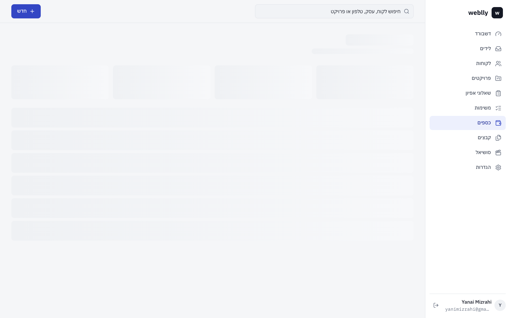
כספים — הכנסות, יתרות והיסטוריית תשלומים
9. משימות
משימה = כותרת, תיאור, פרויקט, תאריך יעד ועדיפות. מסמנים ✓ כדי להשלים, ואפשר לפתוח מחדש. בעמוד משימות הן מסודרות לפי: באיחור · היום · השבוע · בהמשך.
10. סושיאל
המקום לחומרים לסרטונים ולפוסטים. לכל עבודה פותחים תיקייה — למשל "בניית מערכת CRM ללקוח ינאי מזרחי" — ומעלים אליה צילומים וסרטונים לפי חלקים:
חלק
מה מעלים
תהליך הבנייה
צילומי מסך של קוד, מסד הנתונים, העיצוב בעבודה
לפני / אחרי
האתר הישן מול החדש
התוצר הסופי
הקלטות מסך של התוצר, מובייל ודסקטופ
מאחורי הקלעים
אתם מול המחשב, שיחות, הסטודיו
אפשר להעלות לתיקייה תמונות, סרטונים וגם קובצי PDF. לתיקייה יש סטטוס (אוספים חומרים · בעריכה · פורסם), רעיון לסרטון והערות לעריכה. מי שעורך את הסרטונים נכנס לתיקייה, רואה הכול ומוריד.
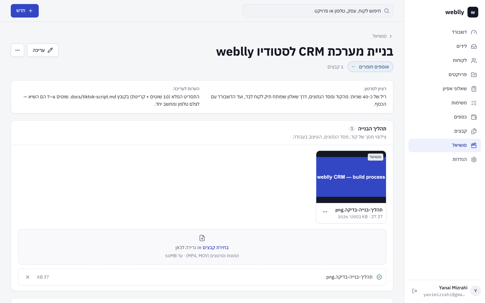
תיקיית סושיאל — חלקים לתהליך, לפני/אחרי ותוצר סופי
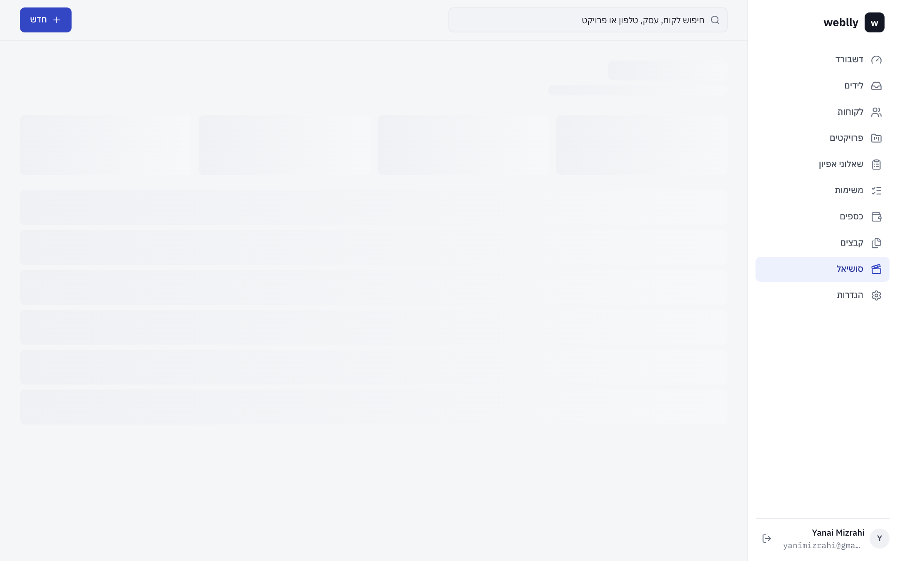
כל התיקיות
11. הגדרות ושאלות נפוצות
בהגדרות: שם העסק (מופיע בשאלונים), טלפון ואימייל ליצירת קשר, טקסט הפתיחה של השאלונים, הפרופיל שלך, שינוי סיסמה, והצוות.
נתוני דמו: כרגע יש במערכת כמה לקוחות לדוגמה (מסומנים "נתוני דמו"). כשמתחילים לעבוד באמת — הגדרות ← "מחיקת נתוני הדמו". הנתונים האמיתיים שלך לא נפגעים.
שאלות נפוצות
לקוח מילא שאלון פעמיים — יהיו לי שני לקוחות? לא. אם הטלפון או האימייל זהים, השאלון מצורף לאותו תיק.
שיניתי תבנית — זה משנה שאלונים שכבר נשלחו? לא. כל שאלון שנשלח "מוקפא" ברגע השליחה, והתשובות נשמרות בדיוק כמו שהלקוח ענה.
מחקתי משהו בטעות? כל מחיקה מבקשת אישור ומסבירה מה יימחק. לקוח שסיימנו איתו עדיף להעביר ל"סיים עבודה" או לארכיון ולא למחוק.
המידע מאובטח? כן. רק משתמשי צוות פעילים רואים נתונים. קבצים נשמרים באחסון פרטי ונפתחים דרך קישורים זמניים. קישור שאלון נותן גישה רק לשאלון אחד — בלי מידע על לקוחות אחרים ובלי הערות פנימיות.